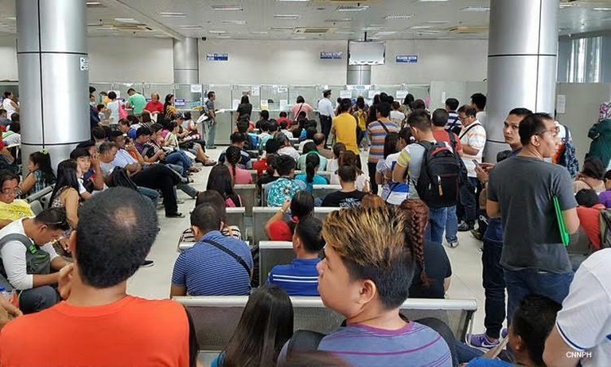

Phillipine News
| CNN |
| HOME |
| PAGE 1 |
| PAGE 2 |
| PAGE 3 |
| PAGE 4 |
| PAGE 5 |
| PAGE 6 |
| PAGE 7 |
| PAGE 8 |
| PAGE 9 |
| PAGE 10 |nbsp;
Duterte: Do not expect me to purchase arms from U.S.

Metro Manila (CNN Philippines, January 11) -- President Rodrigo Duterte
said the United States should not expect the Philippines to get into any arms
and military equipment deals with them amid their threats to sanction countries
engaging in trade with Russia.
Read more on Page 1
Chavit Singson claims he now holds Miss Universe PH franchise.

Metro Manila (CNN Philippines, January 13) -- Former Ilocos Sur Governor Luis
"Chavit"
Singson claimed he has acquired the franchise rights of Miss Universe (MU) in the Philippines.
Read more on Page 2
Scene stealers: 5 candidates who stole the limelight in Miss Universe 2018

Metro Manila (CNN Philippines, December 17) -- Both beauty pageant fanatics and
ordinary spectators were treated to an incredible show Monday morning as this year's
Miss Universe competition displayed the right amount of thrill and excitement.
Read more on Page 3
Ellen Adarna may face legal action for viral video of minor.
Metro Manila (CNN Philippines, May 8) — Filipina actress Ellen Adarna may face
legal action
after publicly accusing a minor of being a "paparazzi" in a viral video.
Read more on Page 4
PBA: June Mar Fajardo wins record-setting 5th straight MVP award

Bocaue, Bulacan (CNN Philippines, January 13) -- San Miguel Beermen stalwart June Mar Fajardo
continued to rewrite the PBA's history book.
Read more on Page 5
E'I will autopsy the yellows': Locsin vows to identify people behind passport mess.

Metro Manila (CNN Philippines, January 13) — Foreign Affairs Secretary Teodoro "Teddy Boy"
Locsin Jr. on Saturday vowed to expose the culprits behind the alleged data breach caused by a previous
outsourced passport maker.
Read more on Page 6
Jericho Rosales defends wife, says having kids not the 'only measure' of womanhood
Metro Manila (CNN Philippines, December 27) — Model and fashion influencer Kim Jones has
husband Jericho Rosales' full support when it comes to chasing her dreams.
Read more on Page 7
PNP urges ACT to 'dissociate from CPP-NPA'

Metro Manila (CNN Philippines, January 10) -- The Philippine National Police (PNP) on
Thursday called on the Alliance of Concerned Teachers (ACT) to cut its supposed ties with the
communist group.
Read more on Page 8
Teachers' group condemns alleged police profiling of its members
Metro Manila (CNN Philippines, January 6) -- The Alliance of Concerned Teachers (ACT) slammed the police
for allegedly profiling their members, saying it was a "grossly illegal and unconstitutional attack" on
their right to free expression and self-organization.
Read more on Page 9
Palace on passport mess: Do not pass requirements burden to applicants

Metro Manila (CNN Philippines, January 14) -- The Palace on Monday said those who will
renew their Philippine passports should not be saddled by the submission of requirements after
the personal data breach.
Read more on Page 10
Report by : JANU YBANEZ